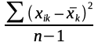
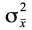
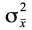
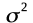

La moyenne d'une série statistique de n observations est le quotient de leur somme par leur nombre.
où k est la colonne et i la ligne ou l'observation (1)
La valeur d'une série statistique pour laquelle le nombre d'observations inférieures ou supérieures à cette valeur sont égal. La détermination de la médiane nécessite le classement de la série par ordre de grandeur (croissante ou décroissante). S'il y a n = 2p + 1 observations celui de rang p+1 sera la médiane. Si par contre n = 2p observations toute valeur comprise entre celle de rang p et celle de rang p+1 peut convenir comme médiane. Mesures appariées quantile, quartiles(quantile d'ordre 4, Q1, Q2 et Q3) et déciles, centile.
Le mode est la valeur la plus souvent rencontrée d'une série statistique
Les indicateurs de dispersion ont pour objet de mesurer la plus ou moins grande concentration des valeurs autour de leur tendance centrale.
La différence entre la valeur maximum et minimum d'une série. Est l'intervalle qui sépare les deux valeurs extrêmes
est la moyenne des valeurs absolues des écarts par rapport à la moyenne;
Est la somme des carrés des écarts par rapport à la moyenne :
` (2)
Est la moyenne des carrés des écarts par rapport à la moyenne :
= = = (3)
Si la moyenne a été obtenue sur échantillon, un degré de liberté a été consommé pour le calcul de cette moyenne et la variance devient
= =  = (4)
Est la racine carrée de la variance : dans le cas d'un calcul sur échantillon :
= = (5)
Des données qualitatives apparaissent chaque fois que la personne interrogée a le choix entre plusieurs modalités qui lui sont proposées explicitement ou implicitement (dans le cas d'une question ouverte avec post-codification).
Pour chaque individu, la réponse correspond à un code ou éventuellement à plusieurs si le choix est multiple (voir questionnaire CAMIP). Sur l'ensemble de la population enquêté, on dénombrera alors le nombre de fois qu'un code j donné est apparu pour la variable k étudiée : ceci indique la fréquence absolue Njk de la modalité. Si cette fréquence absolue est rapportée aux N personnes considérées, on obtient la fréquence relative de la modalité
= (6)
Pour une modalité donnée, la fréquence relative joue un rôle similaire à celui de la moyenne pour les variables quantitatives. Des Indicateurs de dispersion sont également disponibles. Dans la mesure ou un individu a choisi ou non une modalité donnée, on a affaire à un processus binomial. Il est donc possible d'associer une variance et un écart type à chaque modalité d'une variable qualitative :
= (7)
= (8)
On constate que ces indicateurs sont d'autant plus faibles que pjk est proche de 1 ou de 0. Dans les deux cas, cela signifie que les réponses sont très concentrées, soit sur la modalité j, soit sur l'ensemble des autres modalités.
Les données ordinales sont plus difficiles à présenter que les autres catégories de données. Comme on l'a vu, il s'agit de données concernant des rangs de préférence ou de similarité.
On notera que la notion de rang moyen n'a pas de signification, le passage d'un rang au suivant ne correspondant généralement pas a une variation d'intensité de préférence constante.
Si l'on prend le cas des préférences, pour chaque individu, on disposera d'un classement des m items proposés. Sur l'ensemble de la population interrogée, il sera ainsi possible de comptabiliser :
· fonction de répartition des rangs
- le nombre de fois qu'un item donné a été classé en 1re position, en 2e.., en me ;
· matrice de préférences. - le nombre de fois qu'un item donné a été classé avant un autre item;
Dans la plupart des cas, une enquête ne portera que sur un échantillon extrait de la population étudiée. On aura alors à déduire des résultats obtenus sur échantillon les valeurs, c'est-à-dire celles qui seraient disponibles si l'ensemble de la population était connue.
Figure 1 - Population, échantillons et distribution d'échantillonnage
Quand on tire des échantillons de dimension n
d'une population à moyenne µ et variance
 pour des n grands la moyenne des échantillons
sera distribuée approximativement normalement avec une moyenne égale
à µ et une variance

égale
à
pour des n grands la moyenne des échantillons
sera distribuée approximativement normalement avec une moyenne égale
à µ et une variance

égale
à
Comme
 est inconnu on l'estime à partir de s:
est inconnu on l'estime à partir de s:
our des échantillons exhaustifs quand n/N < 1/7
Distribution normale d'une variable centrée et réduite Z (m=0 et
ET = 1)
-3,5 |
-3 |
-2,5 |
-2 |
-1,5 |
-1 |
-0,5 |
0 |
0,5 |
1 |
1,5 |
2 |
2,5 |
3 |
3,5 |
0,00 |
0,00 |
0,02 |
0,05 |
0,13 |
0,24 |
0,35 |
0,40 |
0,35 |
0,24 |
0,13 |
0,05 |
0,02 |
0,00 |
0,00 |
0,00 |
0,00 |
0,01 |
0,02 |
0,07 |
0,16 |
0,31 |
0,50 |
0,69 |
0,83 |
0,93 |
0,97 |
0,99 |
1,00 |
1,00 |
|
|
(a) cumulée |
(b) densité |
Figure 2 - La distribution normale d'une variable centrée et réduite
Toute loi normale est complètement caractérisée par ces deux premiers moments centrés : l’espérance et la variance.
Figure 3
Si X est une variable aléatoire réelle qui suit une loi normale d’espérance μ et de variance  , , alors
Si Z est une variable aléatoire réelle qui suit une loi normale centrée réduite, , alors
La population totale est de taille N; la valeur vraie de la moyenne de la variable analysée est µ, et son écart type s. Ces deux valeurs µ et s sont inconnues, mais sur l'échantillon de taille n, une moyenne et un écart-type s ont été repérés (cf. graphique 1). Il s'agit de déduire µ et s de ces valeurs et s.
Figure 4: Caractéristiques de la population totale et de l'échantillon
Cette déduction suit des règles simples issues de la théorie des sondages, dans la mesure où les hypothèses suivantes sont respectées :
- les éléments de l'échantillon ont été sélectionnés de manière aléatoire;
- l'échantillon est non exhaustif (n/N < 1/7)
- l'échantillon comprend au moins 30 individus.
Dans ces conditions, on montre que les moyennes d'échantillon suivent une loi normale de moyenne µ et d'écart type , avec :
=
Comme
 est inconnu, il est estimé à partir de s :
est inconnu, il est estimé à partir de s :
» s=
Si l'on désire travailler avec un seuil de confiance , un intervalle de confiance pour la moyenne µ est obtenu à l'aide de l'expression:
= (11)
où za/2 est la valeur lue dans la table de la loi normale réduite pour une probabilité (1 - a/2). Il y a ainsi une probabilité (1 - a) que la valeur recherchée se situe dans cette fourchette.
L'association des étudiants d'une université envisage d'ouvrir
un ciné-club; afin d'en évaluer la fréquentation, elle a réalisé
une enquête par sondage sur un échantillon de 400 individus.
Une
moyenne de fréquentation de 10 séances par an et par individu a été
obtenue avec un écart type s = 20. Au seuil de confiance (1 - a) =
95 % l'intervalle de confiance est:
µ = 10 ±
(1,96) (20/(400)1/2) = 10 ±
1,96
Il a 95 chances sur 100 de se situer dans la fourchette
[11,96: 8,04]. Si l'université comprend 5000 étudiants, une
fréquentation globale de 50 000 places peut être attendue en
moyenne; la fréquentation globale a 95 % de chances de se situer
dans l'intervalle [59800: 40200].
1- Dans le cas d'un échantillon exhaustif, c'est-à-dire avec n > N/7, l'écart type , des moyennes d'échantillons doit être corrigé par le facteur d'exhaustivité . L'intervalle de confiance devient alors :
= (12)
On remarque que si n est faible par rapport à N, (N - n)/(N - 1) est proche de 1. Au contraire, si n est grand par rapport à N, (N - n)/(N - 1) est proche de 0; à la limite, pour n = N, µ = .
Dans l'exemple précédent, supposons que l'université considérée
ne comporte que 2 000 étudiants au total. L'échantillon de 400
personnes prélevé par l'association des étudiants doit donc être
qualifié d'exhaustif, et il faut utiliser le facteur de correction,
égal ici à [(2 000 - 400)/(2 000 - 1 )] = 0,80.
Au seuil de
confiance (1 - a) = 95 %, l'intervalle de
confiance devient:
µ = 10 ± (1,96)
(20/) (0,80)1/2= 10 ± 1,74 µ
a 95 chances sur 100 de se situer dans la fourchette [11,74: 8,26].
2 - Dans le cas d'un petit échantillon, avec n < 30, et lorsque est estimé, les moyennes d'échantillons ne sont plus répartis autour de la moyenne vraie selon une loi normale, mais selon une loi de Student à n - 1 degrés de liberté. Dans la formule (1l), za/2 est alors remplacé par ta/2, lu sur la table de Student pour n -1 degrés de liberté et un seuil de confiance ( ).
|
|
|
|
Figure 5 - Loi de Student
Au lieu d'utiliser un échantillon de 400 personnes, L'association
des étudiants s'est limitée à 21 interviews. La moyenne
d'échantillon (15) suit une loi de Student à 20 degrés de liberté.
Dans la mesure où l'écart type repéré sur l'échantillon s'élève
à 20, au seuil de confiance de 95 %, t = 2,086 et l'intervalle de
confiance devient alors:
µ= 15 ±
(2,086) (20/(400-1)1/2) = 15 ±
9,10 à 95 chances sur 100 de se situer dans la fourchette [5,89:
24,10].
Dans le cas de variables qualitatives, la problématique de la prévision des valeurs réelles se pose dans les mêmes termes que pour les variables quantitatives, mais maintenant, il s'agit de fréquences d'apparition de modalités et non plus de moyennes.
La population totale est de taille N; la valeur vraie de la fréquence de la modalité analysée est p. Sur l'échantillon de taille n, une proportion p a été trouvée.
On montre que les proportions lues sur les échantillons suivent une loi normale de moyenne p et d'écart type sp = [p(l - p)/n]l/2.
Au seuil de risque a, l'intervalle de confiance est obtenu par l'expression :
= (15)
Généralement, on prendra, pour calculer l'écart type des proportions, p = 50 %, qui correspond au cas le plus défavorable et non la proportion observée..
Dans le cadre d'une étude de notoriété, 25 % des personnes
interrogées ont déclaré connaître la marque M. Un échantillon
aléatoire non exhaustif de 1000 individus a été utilisé. L'écart
type des proportions est alors:
[0,5(0,5)/1000]l/2 =
0,0158.
Il y a 95 chances sur 100 que le véritable taux de
notoriété se situe dans la fourchette:
p
= 0,25 ± 1,96.(0,0158)
Il doit être
ainsi compris entre 0,25 - 0,03 = 0,22 et 0,25 + 0,03 = 0,28,
c'est-à-dire entre 22 % et 28 %.
(La valeur de la moyenne trouvée sur échantillon aura souvent à être mise en relation avec une valeur a priori µo.) On peut faire des hypothèses concernant la relation entre la moyenne de la population et une telle valeur apriori. Une idée simple est à la base du teste d'hypothèses: une Hypothèse peut être rejetée mais elle ne peut jamais être acceptée, par ce que des preuve ultérieures peuvent montrer le contraire. (exemple: l'homme qui à un comportement d'homme pauvre est-il vraiment pauvre...)
On appellera Hypothèse nulle Ho l'hypothèse selon laquelle la situation vraie est différente ou plus défavorable que celle qui est matérialisée par cette valeur a priori. L'hypothèse nulle doit être choisie de telle manière que son rejet permet "d'accepter" la conclusion désirée. L'hypothèse alternative est Ha. Par le biais d'un test d'hypothèse il s'agira d'évaluer dans quelle mesure Ho peut être rejetée.
On parlera de test unilatéral quand il s'agira de vérifier que la moyenne vraie est plus forte (test dit " à droite "), ou plus faible (test dit " à gauche ") que µo. On aura affaire à un test bilatéral quand il s'agira de démontrer que la moyenne vraie est différente de µo.
Les intentions d'achat X d'un produit nouveau découlant d'une
enquête par sondage auprès des utilisateurs potentiels doivent être
comparées avec le seuil de rentabilité de ce produit µo,
et il faut vérifier l'hypothèse selon laquelle ce seuil de
rentabilité sera bien dépassé. L'hypothèse Ho s'énonce
ici de la façon suivante: " la situation du marché est
telle que le seuil de rentabilité ne sera pas atteint " et
H1,: " le seuil de rentabilité sera
dépassé ". Le test d'hypothèse nécessaire est alors un test
unilatéral à droite.
Si > µo, ce
peut être dû au fait que la vraie moyenne est réellement
supérieure à µo. Ce peut être également dû au fait
que la vraie moyenne est inférieure à µo mais que le
hasard a fait porter le sondage sur un échantillon particulièrement
favorable. Il est évident que plus ( µ
- µo) est grand, moins le risque de se trouver dans cette
deuxième situation est fort.
Dans le problème posé, Ho est associée à la situation µ < µo. Une première façon de procéder consiste à déterminer la probabilité - dénommée probabilité critique p.c. - Avec laquelle Ho est conforme aux résultats lus sur échantillon.
Le graphique 2 résume les termes du problème : Si la moyenne vraie était µ, la probabilité d'obtenir sur échantillon une valeur supérieure ou égale à serait donnée par la surface lue sous la courbe au-delà de la valeur .
Figure 6: Test unilatéral à droite
Dans la mesure où le sondage est aléatoire, non exhaustif et porte sur un effectif supérieur à 30, cette probabilité est calculée à partir d'une table de la loi normale réduite :
z = et p.c. = P (Z > z) (13)
Le fait de rejeter l'hypothèse nulle est associée à un risque égal à p.c. Plus cette probabilité critique est faible et moins il y a de risque à rejeter Ho.
X*, telle que tout résultat de sondage X supérieur à X* permette de rejeter l'hypothèse nulle avec moins de chances de se tromper.
La valeur seuil X* est obtenue à l'aide de l'expression suivante, issue de la formule [11] :
La règle est alors la suivante:
• Si < X*: acceptation de Ho
• Si > X*: rejet de Ho
Les tests unilatéraux à gauche s'effectuent de la même façon; la probabilité critique est la surface sous la courbe au-dessous de la valeur X trouvée sur échantillon. La valeur-seuil X* est calculée à partir de la relation
Les tests bilatéraux nécessiteront l'évaluation de deux valeurs-seuil: une X* à droite de µo et une X** à gauche, par utilisation simultanée des formules (14) et (15).
Le seuil de rentabilité d'un produit industriel nouveau s'élève
à 50 en moyenne par entreprise appartenant au marché potentiel Sur
un échantillon de 100 entreprises, une intention d'achat moyenne de
62 a été repérée, avec un écart-type de 60.
Z62
= (62 - 50) / (60/
)
= 2
p.c. = P(Z > Zx) = p(Z > 2) = 0,023
Avec un
seuil de risque a = 5 %, I'hypothèse nulle est rejetée. En fait Ho
peut être rejetée dès que l'on trouve, sur échantillon une valeur
au moins égale à:
= 50 + (1,64) . (60/ 1001/2) =
59,84
La procédure qui vient d'être exposée ne s'intéresse qu'à une seule catégorie de risque, celui de rejeter Ho alors qu'elle est vraie. C'est le risque a ,risque de première espèce ou encore de risque de type 1. Il sera souvent nécessaire de prendre également en considération le risque d'accepter à tort Ho : c'est le risque b, risque de seconde espèce ou encore de type II.
Le tableau 3 reproduit les résultats possibles d'un test d'hypothèse
|
DÉCISION |
|
SITUATION REELLE |
Ho n'est pas rejetée |
Ho est rejetée |
Ho est vraie |
Décision correcte Seuil de confiance: Proba = 1 - a |
Décision incorrecte Erreur de type I Proba = a |
Ho n'est pas vraie |
Décision incorrecte Erreur de type II Proba =b |
Décision correcte Puissance du test: Proba = 1 - b |
Tableau 1.3.: Résultats d'un test hypothèse
Il est bien évident que, pour une taille d'échantillon donnée, le risque a et le risque b évoluent de façon opposée. Réduire le risque a demande de choisir une valeur-seuil X* plus forte, mais ceci s'accompagne d'une augmentation du risque b, puisqu'il y aura plus de chances d'accepter à tort l'hypothèse nulle .
E
x
e
m
p
l
e
Avec les données de l'exemple précédent, on a vu que le risque
a était limité à 5 % si l'on
choisissait une valeur-seuil de 59,84.
Supposons que la
véritable valeur des ventes moyennes par entreprise soit 62. Avec
une vraie moyenne de 62 et un écart type des moyennes d'échantillon
de 6 (60/1001/2 = 6), il y a une probabilité de 35,94 %
de sélectionner un échantillon dont la moyenne observée sera
inférieure ou égale à 59,84. En effet:
Z = (59,84 - 62)/6 =
- 0,36 et P(Z £ 0,36) = 0,3594
Il y
a donc ici une probabilité de 35,94 % d'accepter à tort l'hypothèse
nulle. C'est la valeur du risque b.
Si
l'entreprise veut se prémunir plus fortement contre le rejet à tort
de Ho avec un risque a de 2,5 % seulement, elle sera amenée à
choisir une valeur seuil plus forte, égale à:
X* = 50 +
1,96(6) = 61,76
La sélection d'une telle valeur-seuil augmente
le risque b. Dans l'hypothèse où la
moyenne vraie est 62:
Z = (61,76 - 62)/6 = - 0,04 et P(Z £
-0,04) = 0,484
Le risque b est ici
de 48,4 %.
En ce qui concerne les test d'hypothèse, les mêmes procédures que pour les variables quantitatives sont employées. C'est la formule (15) qui servira désormais dans le calcul des probabilités critiques et des valeurs-seuil.
E
x
e
m
p
l
e
Le taux de notoriété de la marque M dont il était question dans
l'exemple précédent a été mesuré à la suite d'une campagne
publicitaire. Le taux de notoriété précédemment connu s'élevait
à 21%. Peut-on en conclure que la publicité a fait augmenter de
façon significative la connaissance de la marque ?
L'hypothèse
nulle correspond ici au cas où la publicité n'a eu aucun effet sur
la notoriété de la marque et donc que la proportion vraie est
toujours au niveau ancien de 21%. Le rejet éventuel de l'hypothèse
nulle demande de calculer la probabilité critique p.c., définie ici
comme la probabilité d'obtenir une proportion observée sur
échantillon au moins égale à 25 % dans une population où la
proportion vraie est 21%.
La proportion observée p correspond,
en valeur centrée réduite
Zp = (0,25 - 0,21)/0,0158 = 2,53
probabilité critique est donc: P(Z > Zp) = 0,57 %
Les résultats du dépouillement d'une question qualitative se présentent comme une distribution de fréquences d'apparition des différentes modalités de la variable concernée.
Cette distribution peut être comparée à une distribution a priori, dite distribution théorique. Comme dans les tests d'hypothèses vus plus haut, deux hypothèses sont alors testées:
- Ho la distribution observée n'est pas significativement différente de la distribution théorique.
Hl: la distribution observée est significativement différente de la distribution théorique.
Soient Z1,... ,Zn, n variables aléatoires réelles indépendantes et identiquement distribuées, Zi ~ N(0; 1), mutuellement indépendantes deux à deux. Alors la loi de la variable aléatoire définie par : est dite loi du khi-deux à n degrés de liberté,
Figure 7 - Loi du Khi-deux
La loi du Khi-Deux ( ) donne la répartition des écarts entre les fréquences absolues théoriques et les fréquences absolues observées, sous hypothèse nulle.
On mesure le par :
= (16)
où Nj = fréquence absolue observée pour la modalité j; = fréquence absolue théorique pour la modalité j.
Cette valeur calculée du est comparée avec la valeur lue sur la table du , pour m - 1 degrés de liberté lorsque la variable qualitative comporte m modalités , et pour un seuil de confiance donné 1 - a. Si la valeur calculée du est supérieure à la valeur de la table, Ho peut être rejetée avec un risque inférieur à a.
Le tableau 1.4. reproduit une application du test du pour le traitement des résultats d'une étude sur les clients d'une ligne aérienne. Il s'agit ici de vérifier si l'échantillon interrogé respecte bien les proportions connues des passagers eu égard à leur qualité d'abonné ou non. Le calculé apparaissant plus faible que le lu sur la table (5,99 pour 2 degrés de liberté au seuil de 5 %), les différences constatées ne sont pas significatives.
Tableau 1.4.: Application du test du Khi-Deux
Modalité |
Effectif observé Nj |
Effectif théorique Qj |
|
|
|
Abonné année |
80 |
90 |
-10 |
100 |
1,11 |
Abonné mois |
50 |
45 |
5 |
25 |
0 56 |
Autre |
100 |
95 |
5 |
25 |
0 26 |
Total |
230 |
230 |
|
|
= 1,93 |
Nombre de degrés de liberté: 2 Valeur du Khi-Deux au seuil de 5 %: 5,99
La qualité de l'ajustement d'une fonction de répartition observée à une fonction de répartition a priori peut également être évaluée à l'aide du test de Kolmogorov-Smirnov.
On aura recours à un test chaque fois que les modalités de la variable qualitative considérée sont ordonnables, mais aussi lorsque les effectifs des différentes classes sont trop faibles pour autoriser l'utilisation du test du .
Le test demande de calculer des fréquence relatives observées cumulées Fo(j) et des fréquences relatives cumulées théoriques Fq(j) : Fo(j) et Fq(j) représentent respectivement les pourcentages des effectifs observés et théoriques enregistrés jusqu'à la modalité j. Pour chaque modalité la valeur |Fo(j) - Fq(j)| est calculée. Un indicateur D est alors établi, tel que :
D = Maxj |Fo(j) - Fq(j)| (17) Cette valeur est comparée à celle lue sur une table du D de Kolmogorov-Smirnov pour un seuil de confiance donné. A un seuil de risque de 5%, et pour des effectifs totaux supérieurs à 35, D est approximativement égal à 1,36/
Le tableau 1.5. donne une application de ce test à l'étude sur les clients d'une ligne aérienne. Le D calculé est plus faible que le D de la table au seuil de 5% : les différences ne sont pas significatives, comme on l'avait déjà constaté avec le test du .
Tableau 1.5.: Application du test de Kolmogorov-Smirnov
Modalité |
Fréquence |
Cumulé |
Fréquence |
Cumulé |
|Fo(J)-Fq(J)| |
|
relative |
Fo(j) |
Relative |
Fq(j) |
|
|
observée |
|
Théorique |
|
|
Abonné année |
34,78 % |
34,78 % |
39,13 % |
39,13 % |
4,35 % |
Abonné mois |
21,74 % |
56,52 % |
19,57 % |
58,70 % |
2,17 % |
Autre |
43,48 % |
100,00 % |
41,30 % |
100,00 % |
0,00 % |
Total |
100,00 % |
|
100,00 % |
|
|
Valeur calculée de D = 0,0435 Valeur de D au seuil de 5 %: 0,089